Overview
The attendance tracking platform developed by Kaeyros Analytics is designed for two types of organizations, each with access tailored to their needs:
Own Management
For companies using the solution to manage their own staff. Enables real-time tracking of attendance, absences and late arrivals, configuration of sites, hours and schedules, and generation of detailed reports.
Reseller Account
For organizations looking to offer the solution to other client companies. Reserved for Reseller accounts, with extended access to create and manage multiple company spaces from a single interface.
This guide describes step by step how to use the platform, from login to reporting.
Platform Login
Access to the administration platform is done via a web browser:
To log in, follow the steps below:
Open your web browser (Google Chrome, Firefox, Edge, etc.);
Type or click on the URL above;
Enter your email address and password as provided during your subscription;
Click the "Login" button to access your account.

If you cannot remember your password, please contact your administrator or the Kaeyros Analytics team to get a new one.
Once logged in, you are automatically redirected to the attendance logs.
Attendance Logs
The attendance logs are the central hub for daily monitoring. This page displays in real time all check-ins recorded by employees, with for each entry the date, employee name, site, department, arrival time, departure time, any late arrival, total hours worked and status.
From this page, you can:
- view attendance for a given day,
- manually enter attendance,
- download the attendance report,
- view the global report,
- view an individual employee's attendance details.
This feature lets you quickly view the list of employees and their attendance status for a given day. You can refine the display using the available filters: period, site, department, employee, entry type and status. A search field lets you quickly find an employee by name.

This feature allows you to directly record an employee's attendance for a given day, specifying their arrival or departure time. Useful in case of a missed check-in, correction or exceptional addition.
- Click the "Record attendance" button at the top right of the page.

- A dialog box opens. Select the employee, choose the site, then enter the date and time of the check-in.
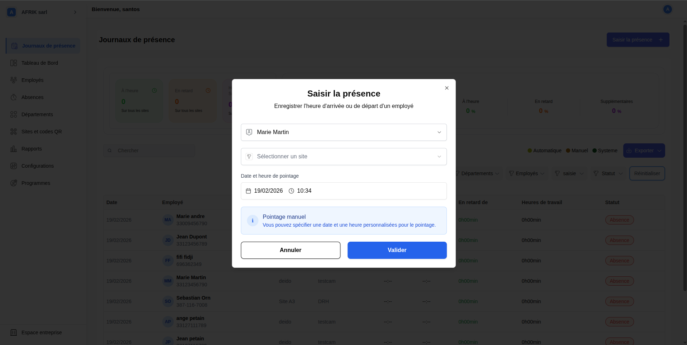
- Click "Confirm". The attendance will immediately appear in the table marked as Manual.
Each employee must record two check-ins per day: the arrival time when entering the site, and the departure time when leaving.
This option allows you to export attendance data as a file for the selected period.
- Select the desired period;
- Click the "Export" button at the top right of the table.

Exported file structure:
| Column | Description |
|---|---|
| Employee | Full name of the employee |
| Arrival / Departure | Corresponding check-in times |
| Site | Location of the check-in |
| Department | Department the employee belongs to |
| Late by | Duration of any late arrival |
| Working hours | Total hours worked during the day |
| Entry type | Automatic, manual or system |
| Status | Present, Absent or Late |

Above the table are a search field, filters by period, site, department, employee, entry type and status, as well as a "Reset" button. A legend indicates the check-in entry mode: Automatic (light green), Manual (orange) and System (dark green).
The page has two parts. At the top, a global summary displays three indicators as coloured cards: On time (green), Late (orange) and Overtime (purple). On the right, a global attendance summary shows percentages split into five categories: Present, Absent, On time, Late and Overtime.
At the bottom, the table lists each employee's check-in details: date, name, site, department, arrival/departure, late arrival, hours worked and status. Filters and a search field allow you to refine the display.
Click on an employee's name in the table to access their individual profile. The profile displays their personal information at the top and consists of two tabs:
Reports/Analysis tab — presents a complete summary for the selected period: number of check-ins by entry mode, six summary metrics (days present, on-time arrivals, late arrivals, absences, attendance %, average lateness) and three analysis charts (pie chart, bar chart, colour-coded monthly calendar).


Attendance Log tab — lists the employee's check-ins chronologically: date, arrival time, departure time, lateness duration, hours worked and status. An "Export" button allows you to download the data.
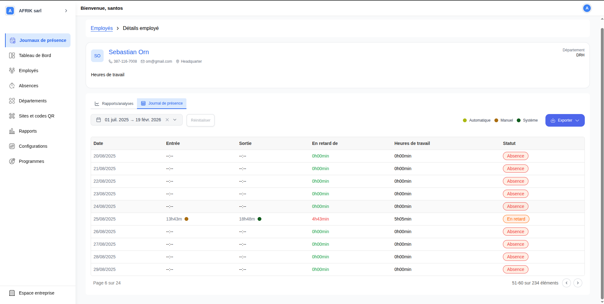
Dashboard
The dashboard provides a synthetic, real-time overview of the company's attendance situation. It consists of two main sections.
Filters allow you to refine the display by period, site, department and employee. Four coloured cards present the key figures:
- Total employees (blue): total number of registered employees, with a link to the full list;
- Absences (pink): total number of absences recorded in days;
- Late arrivals (yellow): total number of late arrivals in cumulated minutes;
- Overtime (purple): total overtime volume in minutes.
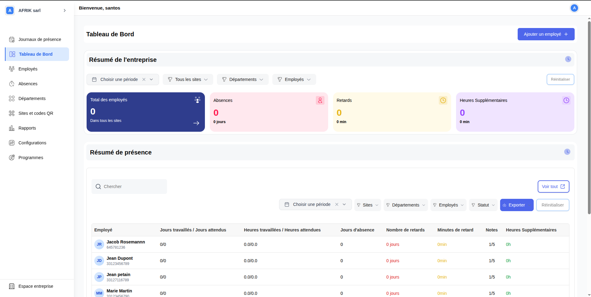
A detailed table shows each employee's individual situation for the period. Filters allow refinement by period, site, department, employee and status. A "View all" button gives access to the full log view. For each employee: days worked / days expected, hours worked / hours expected, absence days, number of late arrivals, cumulated late minutes, score (attendance score) and overtime. An "Export" button allows data download.
Employees
The Employees tab centralises the management of all staff. It displays the complete list of employees with their ID, name, department, assigned site, work schedule, contact information and status (Active or Inactive). Two display modes are available: Table view and Card view.
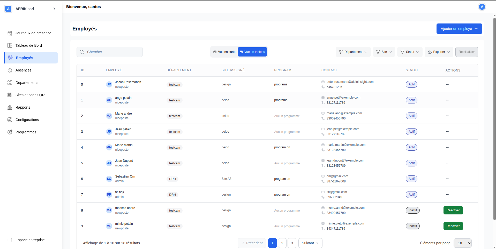
Click "Add an employee". Two addition modes are available:
Single addition
Manually enter the employee's information: first name, last name, email, phone, department, position, assigned sites and profile photo (optional).
Bulk addition
Import multiple employees via an Excel or CSV file (.xlsx, .xls, .csv — max 10 MB) selecting the common site, department and position.

Enter the phone number exactly as registered on WhatsApp (e.g. 23789898989 or 237689898989). An incorrect number will prevent the employee from checking in via WhatsApp.

From the table, click the three dots at the far right of an employee to edit their information or delete their profile. Inactive employees have a "Reactivate" button.
Absences
The Absences tab centralises the tracking of all employee unavailabilities. It displays the complete list of recorded absences with ID, employee name, department, site, duration and status.
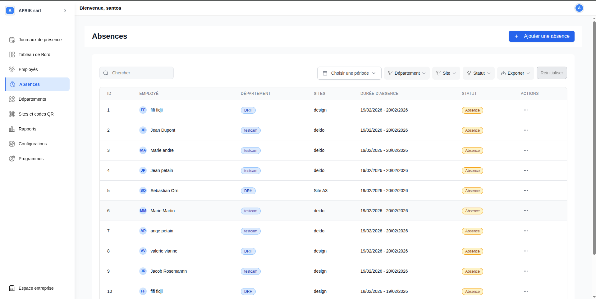
Click "+ Add an absence". Fill in the following fields:
- Employee: select the employee concerned;
- Status: Approved or Not approved;
- Absence type: sick leave, maternity leave, bereavement, etc.;
- Duration: start date and end date;
- Reason: description or justification (optional);
- Attachment: supporting document (PNG, JPEG or PDF — max 5 MB).

Each absence can have one of three statuses:
- Absence: status automatically assigned when the system detects no check-in;
- Approved absence: the manager has officially validated the absence;
- Unapproved absence: the manager has reviewed the absence but has not validated it.
To change the status, click the three dots to the right of the row, then select Edit. You can also click directly on the status in the table.
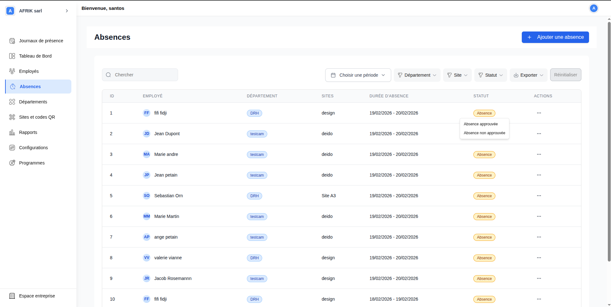
Unrecorded absences are automatically detected by the system when an employee performs no check-in on a scheduled working day, and are assigned Absence status by default.
Departments
The Departments tab allows you to manage all company departments. It displays the list with each department's number and name.
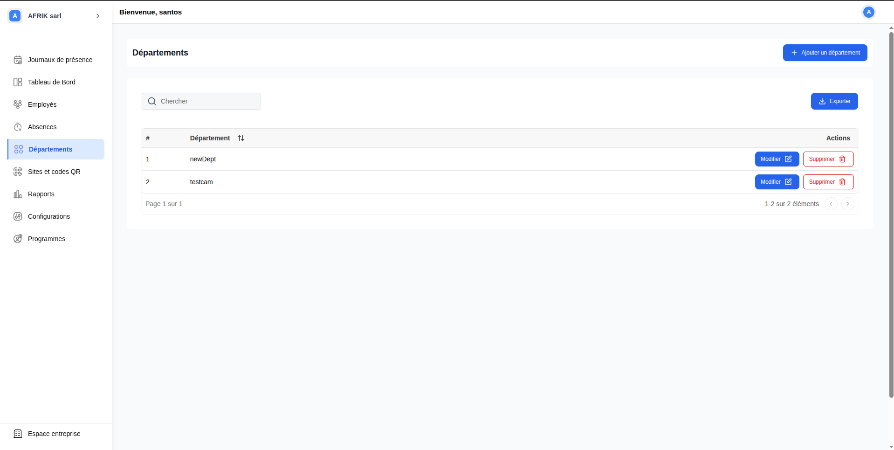
Click "+ Add a department", enter the department name, then click "Add department". It is immediately available for employee assignment.

Click "Edit" to the right of the department. Make the changes and confirm.
Click "Delete" to the right of the department. A confirmation may be requested before permanent deletion.
Departments allow data to be filtered in other sections of the application, particularly in Attendance Logs and Absences.
Sites & QR Codes
The Sites & QR Codes tab allows you to configure the company's geographic sites. Each site is displayed as a card showing its name, longitude, latitude and its automatically generated unique QR code.

Click "+ Add a site". Creation takes two steps.
- Site name: enter the site name;
- Site address: enter the physical address;
- Time zone: select the time zone;
- Longitude and Latitude: enter manually or click "Get location".
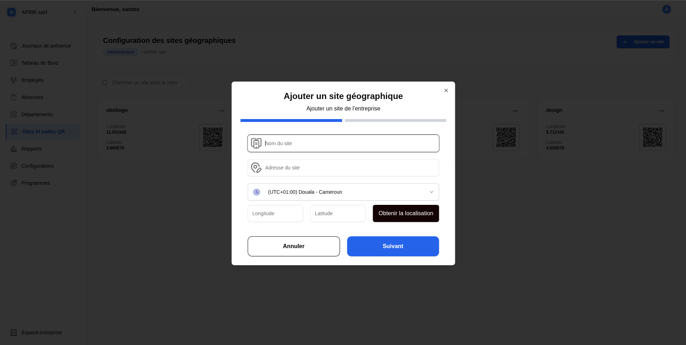
- Working days: select the working days;
- Same hours every day: check for a uniform schedule, or uncheck to customise by day;
- Opening and closing hours: set the hours for each selected day.
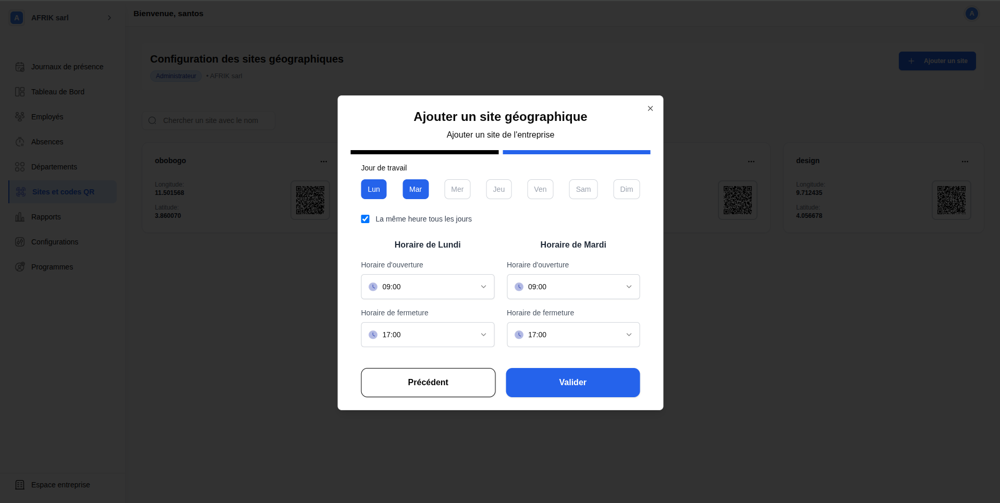
Click the three dots at the top right of a site card:
- Edit site: modify the information;
- Delete site: permanently delete;
- Download QR: download the QR code to display at the workplace.
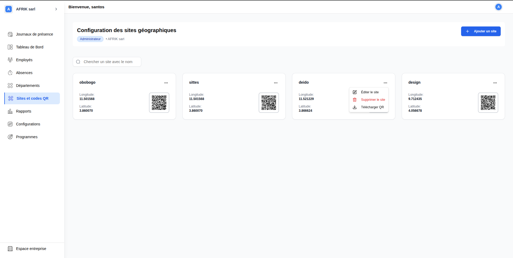
Each site has a unique QR code generated automatically. It must be displayed at the workplace so employees can scan it and record their check-ins.
Reports
The Reports tab provides a complete analytical view of attendance data. Filters allow data refinement by period, site, department and employee.

Five summary indicators at the top of the page:
- Attendance rate: percentage of employees who actually checked in;
- Punctuality rate: percentage of employees who arrived on time;
- Late arrival rate: percentage of employees who arrived late;
- Absence rate: percentage of absent employees;
- Average arrival time: average arrival time across all employees.
Two bar charts by department: average punctuality percentage and average late arrival percentage.
Three complementary charts: Attendance type (breakdown by entry mode), Attendance summary (present vs absent) and Attendance statistics (on time vs late).
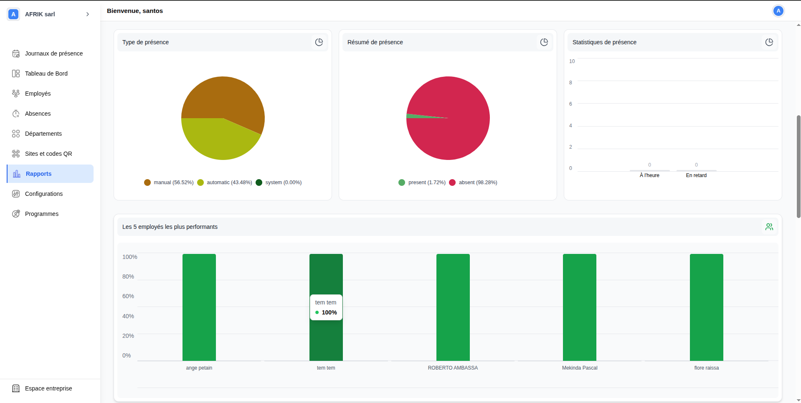
A bar chart highlights the five employees with the best attendance rate over the period.
A line chart shows the evolution of average lateness by department, with a distinct line per department.

All charts are interactive: hover over bars or lines to display detailed values. Filters affect all indicators simultaneously.
Settings
The Settings tab groups all parameters needed for the system to function properly. It is organised into five sub-tabs: Shifts, Hours, Users, Positions and Absence types.
Configure working time slots. Shifts are displayed as cards showing the name, type (regular or night), start time and end time.
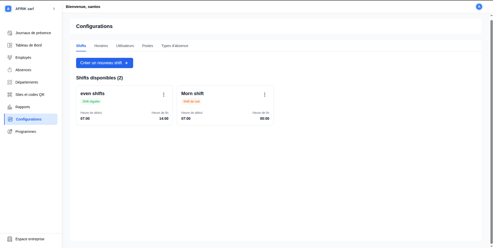
To create a new shift, click "Create a new shift" and fill in:
- Shift name (e.g. Morning shift);
- Start time and end time;
- Night shift: enable if the slot is nocturnal;
- Capacity: maximum number of employees that can be assigned.

Configure working hours per site. Select the site, define the working days and the opening and closing hours — uniform or customised per day.

Manage accounts of users with access to the system. The list shows each user's name, company, role and email address.
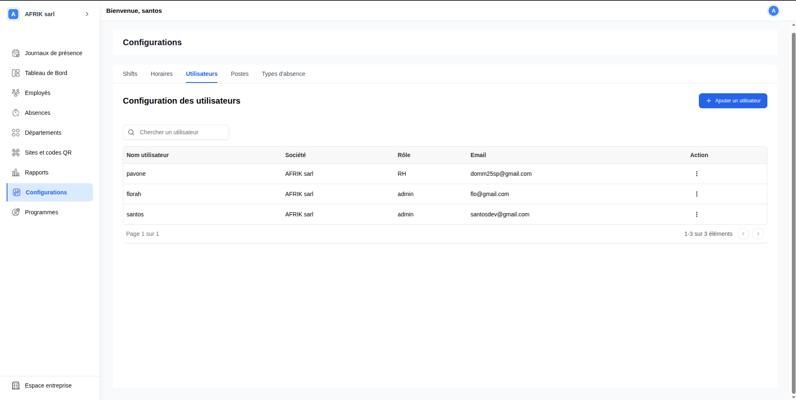
Click "+ Add a user" and fill in: name, email, password and company.

Manage job titles. Click "+ Add a position" and enter the name and an optional description.

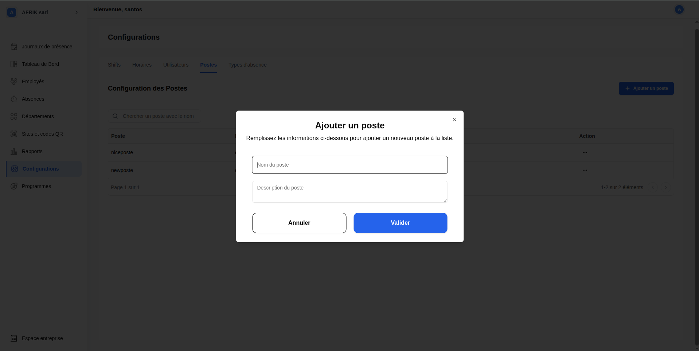
Configure allowed absence categories. Click "+ Add an absence type" and enter the name and an optional description.
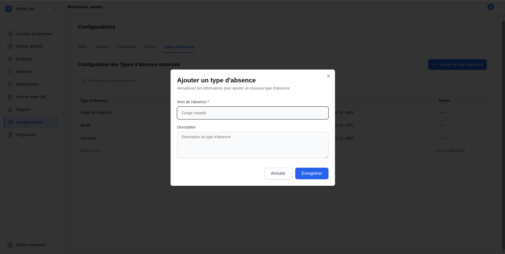
Shifts and hours determine expected attendance windows. Positions and absence types enrich employee profiles. Users control access to the application.
Schedules
The Schedules tab allows you to define and manage work plans. A schedule groups shifts, working days and assigned employees. It is the reference framework used by the system to evaluate attendance, late arrivals and absences.
The list shows for each schedule its name, exception dates, number of associated shifts, number of enrolled employees, maximum capacity and planned working days.

Click "+ Create new schedule" and fill in:
- Schedule name: give an explicit name;
- Select days: click the desired days (Monday to Sunday);
- Schedule capacity: maximum number of employees across all shifts;
- Shifts: for each shift, select the shift and the employees to assign. Click "+ Add a shift" to create multiple blocks. An employee can belong to multiple schedules as long as their shifts do not overlap;
- Dates: Unlimited, Date range or Explicit date list;
- Exception dates: days to exclude from the validity period (public holidays, exceptional closures, etc.).

Click "View details" to access the detail page: schedule days, capacity with progress bar, exception dates, available shifts (cards) and enrolled employees table. The "Remove" button allows removing an employee from the schedule.
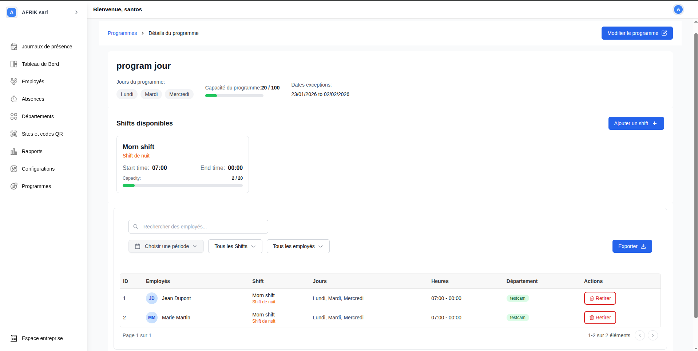
From the list, click the three dots to the right of a schedule to Edit or Delete. From the detail page, the "Edit schedule" button at the top right gives direct access to the form.
An employee can be enrolled in multiple schedules simultaneously, as long as their assigned shifts do not overlap. The system uses schedules to automatically calculate expected attendance, detect absences and measure late arrivals.